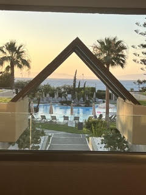
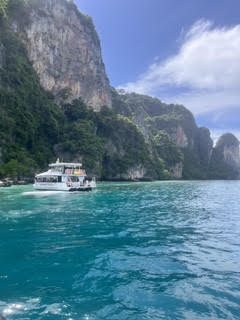
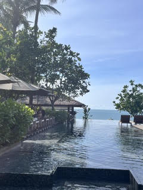

המדריך למטייל בקוסמוי, תאילנד
קוסמוי הוא יעד נפלא לחופשה משפחתית או זוגית המשלב חופים טרופיים, טבע עשיר וחווויה קולינרית מגוונת. זהו אי המציע איזון מושלם בין מנוחה בחופים לבין טיולים, שווקים ווואווירה ייחודית המתאימה לכל מי שמחפש חופשה מהנה.



| נושא | מידע |
|---|---|
| עונה מומלצת | דצמבר עד אפריל |
| מטבע | באט תאילנדי |
| משך שהות מומלץ | 7-5 ימים |
| התניידות | הליכה ברגל, מוניות, טוקטוקים ומעבורות |
| שפה | תאילנדית ואנגלית בסיסית |
אתרי חובה
- שמורת הטבע אנג תונג (Ang Thong): שייט חובה בין איים מרשימים, מים צלולים ונופים פראיים של שמורת הטבע.
- כפר הדייגים וקו טאו: מוקד מומלץ לטיול והסתובבתי נעימה בין חנויות, דוכנים ואווירה מיוחדת, לצד ביקור בחופים המרהיבים של קו טאו.
- מתחם פסל הבודהה המוזהב ומרכזי הקניות: ביקור באתר המוכר עם הפסל הענק והמרשים, לצד סיור בקניונים ובמרכזי הקניות המודרניים של האי.
טיפים למטייל
- רוב ההתניידות באי נעשית בהליכה רגלית כדי להתרשם מהאווירה והדוכנים המקומיים, ולמקומות מרוחקים נעזרים במוניות או בטוקטוקים. את האטרקציות והסיורים נוח לסגור דרך בית המלון או באמצעות הדוכנים המקומיים שלאורך הרחובות.
- עבור שומרי כשרות, בית חב"ד המקומי מעניק מענה מצוין עם קידוש באווירה ישראלית חמה ושתי מסעדות (חלבית ובשרית) הפועלות לאורך השבוע. כמו כן, מומלץ לבקר במסעדות "מאמא מזל" המציעה אוכל ביתי טעים, ובמסעדה "אבא שמעון" המציעה אוכל רחוב כמו המבורגרים ושניצלים.
- כדאי לתכנן את ימי הפעילות והשייט מראש כדי ליהנות מהשהות בצורה מסודרת ויעילה.